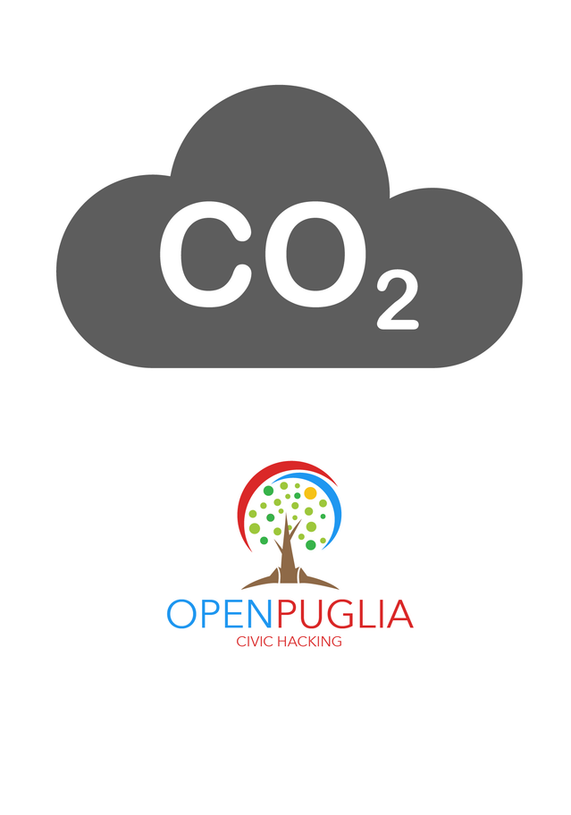

CO2

CO2 è una App sviluppata per il monitoraggio dei dati ambientali in Puglia, rilevati dalle centraline ARPA distribuite su tutto il territorio regionale.
La Rete Regionale ARPA è costituita da 55 stazioni, che rilevano i seguenti inquinanti:
- PM10: Insieme di sostanze solide e liquide con diametro inferiore a 10 micron. Derivano da emissioni di autoveicoli, processi industriali, fenomeni naturali.
- PM2.5: Insieme di sostanze solide e liquide con diametro inferiore a 2.5 micron. Derivano da processi industriali, processi di combustione, emissioni di autoveicoli, fenomeni naturali.
- O3 (Ozono): Sostanza non emessa direttamente in atmosfera, si forma per reazione tra altri inquinanti, principalmente NO2 e idrocarburi, in presenza di radiazione solare.
- NO2 (Biossido di azoto): Gas tossico che si forma nelle combustioni ad alta temperatura. Sue principali sorgenti sono i motori a scoppio, gli impianti termici, le centrali termoelettriche.
- CO (Monossido di carbonio): Sostanza gassosa, si forma per combustione incompleta di materiale organico, ad esempio nei motori degli autoveicoli e nei processi industriali.
- C6H6 (Benzene): Liquido volatile e dall’odore dolciastro. Deriva dalla combustione incompleta del carbone e del petrolio, dai gas esausti dei veicoli a motore, dal fumo di tabacco.
- SO2 (Biossido di zolfo): Gas irritante, si forma soprattutto in seguito all'utilizzo di combustibili (carbone, petrolio, gasolio) contenenti impurezze di zolfo.
- H2S: Gas incolore dall'odore caratteristico di uova marce. L’H2S di origine antropica si forma, tra l’altro, nei processi di depurazione delle acque reflue, produzione di carbon coke, raffinazione del petrolio.
- Black Carbon: Inquinante costituito da polvere finissima di carbone costituita al 95-99% da carbonio e da molecole aromatiche. È emesso soprattutto durante la combustione incompleta del carbone.
- IPA: Inquinanti organici costituiti da più anelli benzenici condensati, si formano per combustione incompleta di combustibili fossili ma anche di legno e rifiuti. (Uno di essi, il benzo(a)pirene, è classificato dalla IARC ha come cancerogeno per l’uomo).
Indice di qualità dell'aria
I dati di monitoraggio dell'aria vengono rilevati dalle centraline ARPA più vicine alla posizione del dispositivo, e viene assegnato un indice di qualità dell'aria secondo questi colori:
 Nessun rischio per la salute
Nessun rischio per la salute
 Per alcuni individui ipersensibili si dovrebbe ridurre l'eserzio fisico all'aperto.
Per alcuni individui ipersensibili si dovrebbe ridurre l'eserzio fisico all'aperto.
 Potrebbero soppragiungere alcune irritazioni, individui con problemi di resporazione e cardiaci dovrebbero ridurre le attività all'esterno.
Potrebbero soppragiungere alcune irritazioni, individui con problemi di resporazione e cardiaci dovrebbero ridurre le attività all'esterno.
Potrebbero soppragiungere alcune irritazioni, individui con problemi di resporazione e cardiaci dovrebbero ridurre le attività all'esterno.
E' in pericolo la salute delle persone, gli individui con problemi respiratori e cardiaci devono evitare di uscire di casa.
 E' in pericolo la salute delle persone, gli individui con problemi respiratori e cardiaci devono evitare di uscire di casa.
E' in pericolo la salute delle persone, gli individui con problemi respiratori e cardiaci devono evitare di uscire di casa.
 E' rischioso per qualsiasi individuo, possibili sintomi di irritazione, evitare di uscire di casa.
E' rischioso per qualsiasi individuo, possibili sintomi di irritazione, evitare di uscire di casa.
Estremamente pericoloso per la salute di qualsiasi individuo.
Rilevamento della qualità dell'aria

Mappa degli inquinanti

Previsioni Meteo

Download
Riferimento
La App è stata sviluppata con IonicFramework
Autore
Supporto